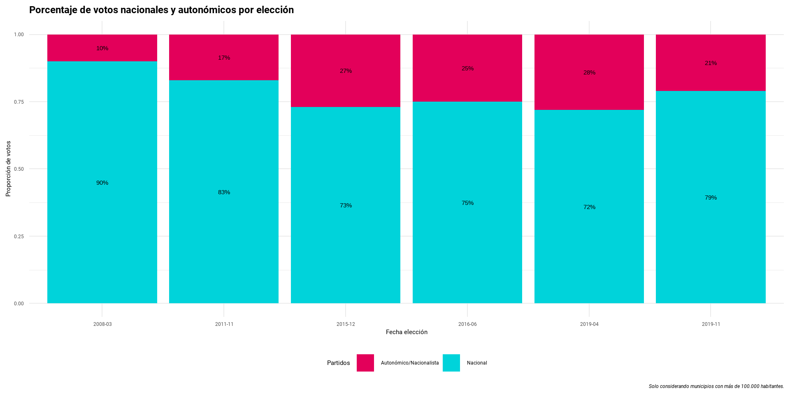

# A tibble: 6 × 14
anno mes codigo_ccaa codigo_provincia codigo_municipio numero_mesas censo
<dbl> <chr> <chr> <chr> <chr> <dbl> <dbl>
1 2008 03 14 01 001 2 1838
2 2008 03 14 01 001 2 1838
3 2008 03 14 01 001 2 1838
4 2008 03 14 01 001 2 1838
5 2008 03 14 01 001 2 1838
6 2008 03 14 01 001 2 1838
# ℹ 7 more variables: participacion_1 <dbl>, participacion_2 <dbl>,
# votos_blancos <dbl>, votos_nulos <dbl>, votos_candidaturas <dbl>,
# partido_politico <chr>, votos <dbl>Entrega grupo 7
Citas electorales al Congreso de los Diputados de España
Mario Camacho, Diana Cáceres, Vicente Pantoja
Entrega
La práctica versará entorno a los archivos de datos electorales que ya hemos trabajado, recopilando datos de citas electorales al Congreso de los Diputados de España desde 2008 hasta 2019.
Bases de datos
Para el desarrollo del presente trabajo, se han considerado las siguientes bases de datos:

datos_elecciones: archivo con los datos electorales al Congreso desde 2.008 hasta las dos de 2.019.
cod_mun: archivo con los códigos y nombres de cada municipio
siglas: siglas y nombres asociados a cada partido
encuestas: tabla de encuestas electorales desde 1.982.
DATOS ELECCIONES
Esta base de datoses un tibble de 48.737 x 471 lo que impide su comprensión y un correcto análisis de datos.
Pivot longer: es preferible una columna con todos los partidos políticos y otra con el número de votos de cada uno en cada municipio en cada una de las elecciones
Datos eliminados:
Valores NA: partidos que no han recibido votos en esas elecciones, NA no significa que sea un dato faltante si no que no ha recibido ningún voto
Columnas que no aportan información, es decir, aquellas que tengan un único valor/constante: tipo elección, código distrito electoral y vuelta.
Datos elecciones
Se obtiene un tibble de 14 columnas.
Se crean dos nuevas columnas.
- fecha (identificador de las elecciones)
- id_mun (funciona como id para unir las bases de datos datos_elecciones y cod_mun)
Se eliminan las columnas anno, mes, codigo_provincia y codigo_municipio” pero se mantiene la columna codigo_ccaa.
CÓDIGOS MUNICIPIOS
Unimos las tablas datos_elecciones y cod_mun a fin de que en la base final aparezca el nombre de los municipios.
La unificación estas dos bases de datos es necesaria para poder realizar análisis geográficos.

SIGLAS
Se normalizan las siglas de los partidos políticos. Por ejemplo, tres denominaciones de Convergència i Unió se unifican en unas únicas siglas para agrupar la información de este partido.
# A tibble: 3 × 3
denominacion siglas siglas_new
<chr> <chr> <chr>
1 CONVERGENCIA I UNIO CIU CiU
2 CONVERGENCIA i UNIO CiU CiU
3 CONVERGÈNCIA DEMOCRÀTICA DE CATALUNYA CDC CiU Se realiza la siguiente normalización:
Code
siglas <- siglas |>
mutate(siglas=case_when(str_detect(str_to_lower(denominacion), ".*part.*popul|pp") ~ "PP",
# P.P-E.U. nos interesa como PP
# listas conjuntas con el Partido Popular en las elecciones municipales y autonómicas de 2007
# en las elecciones generales de 2011 se presentó en coalición con el Partido Popular
str_detect(str_to_lower(denominacion), "^part.*socialist|^socialist.*teruel") ~ "PSOE",
str_detect(str_to_lower(denominacion), "^ciudadanos.*partido|^ciutadans") ~ "C's",
str_detect(str_to_lower(denominacion), "vasco") ~ "PNV",
str_detect(str_to_lower(siglas), "bng") ~ "BNG",
str_detect(str_to_lower(siglas), "comprom") &
!str_detect(siglas,"^0-9")~ "COMPROMÍS", # para evitar COMPROMÍS 2
str_detect(str_to_lower(denominacion), "^conver.*uni|^conver.*cata") ~ "CiU",
# El 19 de septiembre de 1978 [Convergencia Democrática de Cataluña] se coalizó con Unió Democràtica de Catalunya
# El 18 de junio de 2015 Convergència Democràtica de Catalunya anunció el fin de Convergència i Unió
str_detect(str_to_upper(denominacion), "VERDES|PODEM|EZKER|COMUNISTA|ZQUIERDA REPUBLICANA
|VERDS|IZQUIERDA UNIDA|EN MAREA|UNIDAD POPULAR|EQUO") & # importante que el | esté en esta línea y no al final de la anterior
!str_detect(str_to_upper(stringi::stri_trans_general(denominacion, id = "Latin-ASCII")), "MAS PAIS") ~ "UP",
str_detect(str_to_lower(siglas), "erc") |
str_detect(tolower(denominacion), "esquerra republicana") ~ "ERC",
# FRONT PEL PAIS VALENCIA-ERC --> ERC
# https://www.vilaweb.cat/noticia/1142933/20000710/front-pais-valencia-fusionara-erc.pdf
str_detect(str_to_upper(denominacion), "EH|EUSKO|ARALAR") |
str_detect(str_to_upper(siglas), "EH|EUSKO|ARALAR")~ "EH - BILDU",
str_detect(str_to_upper(stringi::stri_trans_general(denominacion, id = "Latin-ASCII")), "MAS PAIS") ~ "MÁS PAÍS",
str_detect(str_to_upper(denominacion), "VOX") ~ "VOX",
TRUE ~ "Otros"),
.after = denominacion)
siglas <- siglas |>
select(denominacion, siglas) |>
distinct()Siglas
Se procede a añadir las siglas de los partidos a la tabla de datos_encuestas.
# A tibble: 121 × 2
partido_politico siglas
<chr> <chr>
1 ALTERNATIVA MOTOR Y DEPORTE <NA>
2 BIDEZKO MUNDURANTZ-POR UN MUNDO MÁS JUSTO <NA>
3 BIDEZKO MUNDURANTZ/POR UN MUNDO MAS JUSTO <NA>
4 CHUNTA ARAGONESISTA-IZQUIERDA UNIDA, La Izquierda de Aragón: La Izqui… <NA>
5 CIUDADANOS PARTIDO DE LA CIUDADANIA <NA>
6 CIUDADANOS PARTIDO DE LA CIUDADANÍA <NA>
7 CIUDADANOS, PARTIDO DE LA CIUDADANÍA <NA>
8 CIUDADANOS-PARTIDO DE LA CIUDADANÍA (C's) <NA>
9 CIUTADANS - PARTIDO DE LA CIUDADANÍA <NA>
10 CIUTADANS, PARTIDO DE LA CIUDADANÍA <NA>
# ℹ 111 more rowsNo todos los partidos políticos de la base de datos de elecciones se encuentran en la base de datos de siglas.
La tabla de dimensiones siglas no nos es útil por no abarcar todas las casuísticas de la tabla de hechos. Realizamos la normalización directamente sobre la base de datos de elecciones.
Code
datos_elecciones <- datos_elecciones |>
mutate(siglas = case_when(str_detect(str_to_lower(partido_politico), ".*part.*popul|pp") ~ "PP",
# P.P-E.U. nos interesa como PP
# listas conjuntas con el Partido Popular en las elecciones municipales y autonómicas de 2007
# en las elecciones generales de 2011 se presentó en coalición con el Partido Popular
str_detect(str_to_lower(partido_politico), "^part.*socialist|^socialist.*teruel") ~ "PSOE",
str_detect(str_to_lower(partido_politico), "^ciudadanos.*partido|^ciutadans") ~ "C's",
str_detect(str_to_lower(partido_politico), "vasco") ~ "PNV",
str_detect(str_to_lower(partido_politico), "galego") ~ "BNG",
str_detect(str_to_lower(partido_politico), "comprom") &
!str_detect(partido_politico,"^0-9")~ "COMPROMÍS", # para evitar COMPROMÍS 2
str_detect(str_to_lower(partido_politico), "^conver.*uni|^conver.*cata") ~ "CiU",
# El 19 de septiembre de 1978 [Convergencia Democrática de Cataluña] se coalizó con Unió Democràtica de Catalunya
# El 18 de junio de 2015 Convergència Democràtica de Catalunya anunció el fin de Convergència i Unió
str_detect(str_to_upper(partido_politico), "VERDES|PODEM|EZKER|COMUNISTA|ZQUIERDA REPUBLICANA
|VERDS|IZQUIERDA UNIDA|EN MAREA|UNIDAD POPULAR|EQUO") & # importante que el | esté en esta línea y no al final de la anterior
!str_detect(str_to_upper(stringi::stri_trans_general(partido_politico, id = "Latin-ASCII")), "MAS PAIS") ~ "UP",
partido_politico == "IU" ~ "UP",
str_detect(str_to_lower(partido_politico), "erc") |
str_detect(tolower(partido_politico), "esquerra republicana") ~ "ERC",
# FRONT PEL PAIS VALENCIA-ERC --> ERC
# https://www.vilaweb.cat/noticia/1142933/20000710/front-pais-valencia-fusionara-erc.pdf
str_detect(str_to_upper(partido_politico), "EH|EUSKO|ARALAR") |
str_detect(str_to_upper(partido_politico), "EH|EUSKO|ARALAR")~ "EH - BILDU",
str_detect(str_to_upper(stringi::stri_trans_general(partido_politico, id = "Latin-ASCII")), "MAS PAIS") ~ "MÁS PAÍS",
str_detect(str_to_upper(partido_politico), "VOX") ~ "VOX",
TRUE ~ "Otros")) #
#|> select(partido_politico)Siglas
Con los nombre de los partidos políticos estandarizados a una lista de trece siglas (facor siglas), agrupamos la información que antes estaba a nivel de partido político a nivel de siglas.
Seleccionamos una muestra aleatoria del dataset y vemos de qué forma es más rápida la agrupación de la información:
- summarise con todas las columnas en el by (se agrega directamente la información).
- mutate con las columnas que sirven de identificador del dato y posterior distinct (se calcula la información agrupada y luego se quitan datos duplicados).
# A tibble: 5 × 4
fecha codigo_ccaa `Freq muestra(n)` `Freq muestra(%)`
<glue> <chr> <int> <dbl>
1 2019-11 01 7752 11.6
2 2019-11 02 5087 7.6
3 2019-11 03 827 1.2
4 2019-11 04 716 1.1
5 2019-11 05 1251 1.9# A tibble: 5 × 4
fecha codigo_ccaa `Freq muestra(n)` `Freq muestra(%)`
<glue> <chr> <int> <dbl>
1 2019-11 01 387 11.6
2 2019-11 02 254 7.6
3 2019-11 03 41 1.2
4 2019-11 04 35 1.1
5 2019-11 05 62 1.9Siglas
La función microbenchmark, nos permite comparar el tiempo de ejecución entre dos expresiones.
microbenchmark(sample_1 |> summarise(votos = sum(votos), .by=everything()[! everything() %in% c('votos')]) |> ungroup(),
sample_1 |> mutate(votos = sum(votos), .by=c(fecha, cod_mun, siglas)) |> distinct() |>ungroup(),
times=1) # AUMENTAR A 100 EN LA EJECUCCIÓN FINAL DE LAS DIAPOSUnit: milliseconds
expr
ungroup(summarise(sample_1, votos = sum(votos), .by = everything()[!everything() %in% c("votos")]))
ungroup(distinct(mutate(sample_1, votos = sum(votos), .by = c(fecha, cod_mun, siglas))))
min lq mean median uq max neval
43.4022 43.4022 43.4022 43.4022 43.4022 43.4022 1
49.6740 49.6740 49.6740 49.6740 49.6740 49.6740 1De acuerdo a la simulación realizada, se concluye que la función summarise permite realizar el desarrollo en un tiempo menor.
LIMPIEZA DE DATOS
Se crea un dataset con información a nivel municipio con el identificador de este y datos de censo electoral, número de mesas electorales y participación para cada fecha.
Para algunas variables numéricas se hace una trasformación logarítma debido a su gran dispersión. Las variables calculadas en porcentajes tiene valores extremos que en realidad son datos incoherentes (mayor número de votos que censados).
Limpieza de datos
También se encuentran datos de participación erróneos como:
- Datos de participación mayores a 1.
- Datos del primer avance superiores al segundo avances / datos del primer avance superior a 1.
- Datos del segundo avance a cero.
En la primera casuística, eliminamos los registros donde el número de votos es superior al número de censados. (solo dos registros)
Los casos donde tanto el primer como el segundo avance es cero, se dan por válidos ya que el censo electoral de esos municipios es muy pequeño (vamos a suponer que todos los censados del pueblo fueron a votar a última hora).
datos_elecciones_maestra |>
filter(p_participacion_1 == 0 & p_participacion_2 == 0 ) |>
select(fecha, cod_mun, censo, p_participacion_1, p_participacion_2, p_votos)# A tibble: 3 × 6
fecha cod_mun censo p_participacion_1 p_participacion_2 p_votos
<ord> <glue> <dbl> <dbl> <dbl> <dbl>
1 2011-11 07-45-080 3 0 0 1
2 2019-04 08-42-011 17 0 0 0.647
3 2019-11 07-45-080 3 0 0 1 Limpieza de datos
En los casos donde el dato del primer avance es superior al segundo se buscan municipios similares a él y se sustituye su dato de participación por la media de estos municipios similares. Hacemos el mismo trabajo para casos donde el dato del primer avance es superior a uno.
datos_elecciones_maestra |>
filter(p_participacion_1 > 1 | p_participacion_1 > p_participacion_2) |>
select(fecha, cod_mun, censo, p_participacion_1, p_participacion_2)# A tibble: 17 × 5
fecha cod_mun censo p_participacion_1 p_participacion_2
<ord> <glue> <dbl> <dbl> <dbl>
1 2008-03 08-09-384 310 0.890 0.806
2 2008-03 07-16-276 27 10.2 0.741
3 2008-03 07-19-104 19 0.316 0.263
4 2008-03 16-26-086 22 1.05 1.05
5 2008-03 16-26-115 19 1.11 1.11
6 2008-03 02-44-009 804 0.419 0.0995
7 2008-03 02-44-112 510 0.694 0.653
8 2011-11 07-19-048 18 0.333 0.167
9 2011-11 07-19-322 35 1 0.6
10 2016-06 07-19-321 39 1 0
11 2016-06 11-32-004 1798 0.387 0.239
12 2019-04 02-22-044 234 0.880 0
13 2019-04 02-22-151 88 1 0
14 2019-04 13-31-093 275 1 0
15 2019-04 08-40-161 35 0.0571 0
16 2019-04 08-49-201 285 0.835 0
17 2019-11 01-29-063 305 0.764 0
Limpieza de datos
- Declaración de la función:
Code
correcion_df <- function(data, cond_errata){
a <- data |> filter( eval(parse(text=cond_errata)) )
return(as_tibble(a))
}
correcion_dato_censal <- function(data, var_errata, fecha_errata, mun_errata){
censo_errata <- data |>
filter(fecha==fecha_errata & cod_mun == mun_errata) |>
select(censo) |>
pull()
part_2_tope <- data |>
filter(fecha==fecha_errata & cod_mun == mun_errata) |>
select(p_participacion_2) |>
pull()
varlor_new <- data |>
filter(fecha == fecha_errata & cod_mun != mun_errata & eval(parse(text=var_errata)) <= 1 & p_participacion_2 <= part_2_tope) |>
filter(between(censo,
censo_errata - censo_errata * 0.1,
censo_errata + censo_errata * 0.1)) |>
select(all_of(var_errata)) |>
sapply(, FUN = "mean", na.rm = TRUE)
if (is.na(varlor_new)) { varlor_new = part_2_tope}
if (varlor_new > part_2_tope) { varlor_new = part_2_tope}
# print de validación
# print(data |> filter(fecha==fecha_errata & cod_mun!=mun_errata & eval(parse(text=var_errata))<=1) |>
# filter(between(censo,
# censo_errata-censo_errata*0.10,
# censo_errata+censo_errata*0.10)) |> select(fecha,cod_mun,censo,var_errata) |>
# mutate(val1=censo_errata-censo_errata*0.10,val2=censo_errata+censo_errata*0.10))
return(varlor_new)
}- Aplicación de la función:
Code
cond_errata_1 = "(p_participacion_1>1 | p_participacion_1>p_participacion_2)"
new_data <-
correcion_df(datos_elecciones_maestra,cond_errata_1) |>
mutate(p_participacion_1 = correcion_dato_censal(data = datos_elecciones_maestra, # corrijo con la base de datos original
var_errata = "p_participacion_1",
fecha_errata = fecha,
mun_errata = cod_mun),
.by = c(fecha, cod_mun))- Corrección de base de datos original:
- Comprobación de registros con la base obtenida.
Code
datos_elecciones_maestra <- datos_elecciones_maestra |>
anti_join(new_data, by=c("fecha", "cod_mun"))
datos_elecciones_maestra <- rbind(datos_elecciones_maestra,new_data)
datos_elecciones_maestra |>
filter(p_participacion_1>1 | p_participacion_1 > p_participacion_2) |>
select(fecha, cod_mun, censo, p_participacion_1, p_participacion_2)# A tibble: 0 × 5
# ℹ 5 variables: fecha <ord>, cod_mun <glue>, censo <dbl>,
# p_participacion_1 <dbl>, p_participacion_2 <dbl>Code
# A tibble: 0 × 6
# ℹ 6 variables: fecha <ord>, cod_mun <glue>, censo <dbl>,
# p_participacion_1 <dbl>, p_participacion_2 <dbl>, p_votos <dbl>Limpieza de datos
- Resultado.
Code
# A tibble: 10 × 6
fecha cod_mun censo p_participacion_1 p_participacion_2 p_votos
<ord> <glue> <dbl> <dbl> <dbl> <dbl>
1 2011-11 07-45-080 3 0 0 1
2 2019-04 08-42-011 17 0 0 0.647
3 2019-11 07-45-080 3 0 0 1
4 2016-06 07-19-321 39 0 0 0.769
5 2019-04 02-22-044 234 0 0 0.786
6 2019-04 02-22-151 88 0 0 0.75
7 2019-04 13-31-093 275 0 0 0.771
8 2019-04 08-40-161 35 0 0 0.8
9 2019-04 08-49-201 285 0 0 0.853
10 2019-11 01-29-063 305 0 0 0.8 ENCUESTAS
Filtros.
- Hagan referencia a elecciones anteriores a 2.008.
- Sean a pie de urna.
- Tengan un tamaño muestral inferior a 750 o que sea desconocido.
- Tengan menos de 1 o menos días de trabajo de campo.
- Datos eliminados.
- Columnas con valor único.
- Columnas sin valores informados. (partidos políticos con toda la información a NA)
- Se eliminan las columnas: tipo_eleccion, vuelta, codigo_distrito_electoral.
- Se transforma la base de datos encuestas a formato tidy.
- Normalizamos los nombre de los partidos de manera análoga a la base de datos de votaciones.
ANÁLISIS DE VOTACIONES
Los datasets finales con los que trabajaremos en el análisis son encuestas y datos_elecciones, que son dos tibbles y están en formato tidy, lo que nos ayudará a realizar los análisis correspondientes. Se eligió este formato por las siguientes razones:
Los nombres de las columnas de un tibble hacen que los datos sean más fáciles de entender.
Los tipos de datos específicos de los valores de un tibble ayudan a prevenir errores, con los que se trabaja en el análisis son adecuados para el estudio propuesto.
Permiten el uso de pipes y tidyverse.
Análisis de votaciones
Los datasets que contienen los datos necesarios para analizar la evolución de la opinión pública en España desde 2.008 son: encuestas tibble de dimensión 13379*10 y datos_elecciones, tibble de dimensión 367241*13.
Además las siglas las hemos definido de acuerdo a las indicaciones señaladas, excluyendo la base de datos “siglas” debido a no tener datos completos para el presente estudio, considerando que no abarca todos los partidos politicos que sugiere el proyecto.
Tampoco necesitamos el dataset cod_mun ya que hemos añadido su información a datos_elecciones.
## # A tibble: 6 × 11
## date_elec id_pollster pollster media field_date_from field_date_to size
## <date> <chr> <chr> <chr> <date> <date> <dbl>
## 1 2008-03-09 pollster-49 GESOP EL PERIÓD… 2008-03-05 2008-03-07 1000
## 2 2008-03-09 pollster-49 GESOP EL PERIÓD… 2008-03-05 2008-03-07 1000
## 3 2008-03-09 pollster-49 GESOP EL PERIÓD… 2008-03-05 2008-03-07 1000
## 4 2008-03-09 pollster-49 GESOP EL PERIÓD… 2008-03-05 2008-03-07 1000
## 5 2008-03-09 pollster-49 GESOP EL PERIÓD… 2008-03-05 2008-03-07 1000
## 6 2008-03-09 pollster-49 GESOP EL PERIÓD… 2008-03-05 2008-03-07 1000
## # ℹ 4 more variables: turnout <dbl>, partido_politico <chr>,
## # estimacion_votos <dbl>, siglas <fct>## # A tibble: 6 × 15
## fecha cod_mun municipio codigo_ccaa codigo_provincia numero_mesas censo
## <ord> <glue> <chr> <chr> <chr> <dbl> <dbl>
## 1 2008-03 14-01-001 Alegría-Dul… 14 01 2 1838
## 2 2008-03 14-01-001 Alegría-Dul… 14 01 2 1838
## 3 2008-03 14-01-001 Alegría-Dul… 14 01 2 1838
## 4 2008-03 14-01-001 Alegría-Dul… 14 01 2 1838
## 5 2008-03 14-01-001 Alegría-Dul… 14 01 2 1838
## 6 2008-03 14-01-001 Alegría-Dul… 14 01 2 1838
## # ℹ 8 more variables: participacion_1 <dbl>, participacion_2 <dbl>,
## # votos_blancos <dbl>, votos_nulos <dbl>, votos_candidaturas <dbl>,
## # partido_politico <chr>, votos <dbl>, siglas <fct>Análisis de votaciones
El análisis es principalmente a través de dataviz y con información de los partidos políticos. Definimos los colores con los que vamos a representar a cada uno de los partidos.
Code
#Colocación de colores para cada sigla según su color oficial
datos_elecciones <- datos_elecciones |>
mutate(color_politico = case_when(siglas == "PP" ~ "#3399FF",
siglas == "PSOE" ~ "#F6350B",
siglas == "C's" ~ "#FF5824",
siglas == "PNV" ~ "#008135",
siglas == "BNG" ~ "#76b3dd",
siglas == "COMPROMÍS" ~ "#de6c25",
siglas == "CiU" ~ "#FF0000",
siglas == "UP" ~ "#6D50B3",
siglas == "ERC" ~ "#ffbf41",
siglas == "EH - BILDU" ~ "#00bda1",
siglas == "MÁS PAÍS" ~ "#E61455",
siglas == "VOX" ~ "#73B446",
TRUE ~ "#462B25"))
#Generación de tibble con colores para cada sigla según su color oficial
colores_politicos <- datos_elecciones |>
distinct(siglas) |>
mutate(color_politico=case_when(siglas == "BNG" ~ "#76b3dd",
siglas == "C's" ~ "#FF5824",
siglas == "CiU" ~ "#FF0000",
siglas == "COMPROMÍS" ~ "#de6c25",
siglas == "EH - BILDU" ~ "#00bda1",
siglas == "ERC" ~ "#ffbf41",
siglas == "MÁS PAÍS" ~ "#E61455",
siglas == "PNV" ~ "#008135",
siglas == "PP" ~ "#3399FF",
siglas == "PSOE" ~ "#F6350B",
siglas == "UP" ~ "#6D50B3",
siglas == "VOX" ~ "#73B446",
TRUE ~ "#462B25"))
cols <- rlang::set_names(colores_politicos$color_politico,
colores_politicos$siglas)Code
# Censo total en cada elección
maestra_censo <- datos_elecciones |> distinct(fecha, cod_mun, censo) |> summarise(censo=sum(censo), .by = fecha)
# Total de votos por sigla en cada uno de las fechas (agupamos todos los votos de todos los municipios)
data_1 <- datos_elecciones |>
summarise(votos=sum(votos), .by = c(fecha, siglas, color_politico)) |>
left_join(maestra_censo, by = "fecha")
# left_join(datos_elecciones |> distinct(fecha, cod_mun, censo) |> summarise(censo=sum(censo), .by = fecha), by = "fecha")
min_votos <- data_1 |> summarise(votos=sum(votos), .by=fecha) |>
summarise(min_v=min(votos)) |> pull()
participacion <- data_1 |> summarise(participacion=sum(votos)/max(censo), .by=fecha)
p_votos <- data_1 |> summarise(votos = sum(votos), .by=fecha) |> left_join(maestra_censo, by = "fecha") |>
mutate(p_votos = votos/censo) |> select(p_votos) |> pull()Análisis de votaciones en España en el rango 2008 - 2019
En España se han realizado 6 votaciones en el rango de años de 2.008 a 2.019. Para analizar estas votaciones, se utilizaron datos electorales y de participación y número de votos. Se utilizaron las encuestas electorales desde 2.008 incluyendo sus casas encuestadoras, la fecha de las futuras elecciones y el tipo de encuesta.
Participación
El número de votos siempre se ha mantenido por encima de 23754401 votos pero, ¿cuánto ha supuesto este número de votos sobre el total de la población?
Comparando la participación con el censo para cada una de las elecciones:
El número de censados aumenta y la participación parece que va a la baja, aunque con seis evaluaciones no se puede afirmar con seguridad. Al comienzo de 2019 hay un repunte de la participación, pero de nuevo vuelve a bajar, posiblemente por el “aburrimiento” de volver a votar en ese mismo año.
Peso de no votantes versus el total de votos
Miramos el peso que han tenido las personas censadas que no han votado versus el total de votos por cada una de las elecciones.
Peso de no votantes versus el total de votos
Al igual que al inicio veíamos los votos recibidos por cada partida, ahora incluímos ese no voto como una representatividad más.
Peso de no votantes versus el total de votos
Distribución de votos
España cuenta en la actualidad con 6 partidos políticos de corte nacional, y 6 partidos políticos de estatus autonómico o nacionalista. Su concentración de voto en cada una de las elecciones se pueden apreciar en el siguiente gráfico.
Hasta el 2.011 la dominancia de los partidos de corte nacional fue superior al 80 %, disminuyó entre las votaciones del 2.015 a abril del 2.019 a valores del 71 % - 75 %, y en la siguiente votación volvió a aumentar al 78 %.
Votaciones en municipios con mayor censo
Se trata de 48 municipios con más de 100.000 censados.
Vemos la distribucion del total de votos en estos municipios en cada una de las elecciones.
El peso de los partidos de ámbito nacional se mantiene.
Votaciones en municipios con mayor censo
Misma representación para los 48 municipios con más de 100.000 censados pero a nivel de partido político y no en función del ámbito.
Proporción de votos del partido más votado en estos municipios en cada fecha.
# A tibble: 6 × 3
# Groups: fecha [6]
fecha siglas prop
<ord> <fct> <dbl>
1 2008-03 PSOE 0.43
2 2011-11 PP 0.46
3 2015-12 PP 0.29
4 2016-06 PP 0.33
5 2019-04 PSOE 0.28
6 2019-11 PSOE 0.28Partido ganador por elección
- Bajamos ahora a nivel municipio para ver el primer y segundo partido más votado.
- No excluímos a ningún municipio en función del censo.
- Visualmente.
- Se aprecia que cuando el PP queda en primer lugar el partido que más veces está en segundo puesto es el PSOE. Y viceversa.
## # A tibble: 98,595 × 4
## fecha cod_mun siglas votos
## <ord> <glue> <fct> <dbl>
## 1 2008-03 01-04-001 PSOE 512
## 2 2008-03 01-04-001 PP 382
## 3 2008-03 01-04-002 PSOE 532
## 4 2008-03 01-04-002 PP 340
## 5 2008-03 01-04-003 PP 7632
## 6 2008-03 01-04-003 PSOE 4261
## 7 2008-03 01-04-004 PSOE 269
## 8 2008-03 01-04-004 PP 106
## 9 2008-03 01-04-005 PSOE 236
## 10 2008-03 01-04-005 PP 191
## # ℹ 98,585 more rowsNo tenemos manera de deshacer un empate de votos.
- Permitimos tener más de un partido en primera posición.
- Todos los partidos que estén en primera posición ocuparán tanto el primer como el segundo puesto.
# A tibble: 4 × 6
fecha cod_mun codigo_ccaa siglas votos posicion
<ord> <glue> <chr> <fct> <dbl> <chr>
1 2015-12 07-19-010 07 PP 2 Más votado
2 2015-12 07-19-010 07 PSOE 2 Más votado
3 2015-12 07-19-010 07 VOX 2 Más votado
4 2015-12 07-19-010 07 C's 2 Más votado# A tibble: 4 × 6
fecha cod_mun codigo_ccaa siglas votos posicion
<ord> <glue> <chr> <fct> <dbl> <chr>
1 2015-12 07-19-010 07 PP 2 Segundo más votado
2 2015-12 07-19-010 07 PSOE 2 Segundo más votado
3 2015-12 07-19-010 07 VOX 2 Segundo más votado
4 2015-12 07-19-010 07 C's 2 Segundo más votadoPartido ganador por elección
Vemos la relación entre el partido más votado y el segundo, teniendo en cuenta todos los municipios para todas las elecciones. Visualmente se aprecia que cuando el PP queda en primer lugar el partido que más veces está en segundo puesto es el PSOE. Y viceversa. Cuando el PSOE ocupa la primera posición en votos el partido que más veces está tras él es el PP.
Partido ganador por elección
Vemos un pequeño flujo residual que va de PSOE en primera posición a PSOE en segunda posición. Esto se debe a los casos de empate en el partido más votado donde decidíamos poner a ambos partidos como primer y segundo partido más votado.

Bipartidismo
Al momento de comparar la primera votación con la última reportada, podemos evidenciar que la tendencia bipartidista ha decrecido, en parte por la aparición de nuevos partidos y tendencias políticas
Bipartidismo
Al momento de comparar la primera votación con la última reportada, podemos evidenciar que la tendencia bipartidista ha decrecido, en parte por la aparición de nuevos partidos y tendencias políticas
Diferencias entre primer y segundo partido
Dónde la diferencia entre el primer y el segundo partido es máxima.
Solo interesa municipios donde el censo sea alto: 2.000 censados en adelante.
En estos municipios de mayor censo sabemos que si vemos una diferencia de pocos votos es realmente un resultado ajustado, ya que no es lo mismo una diferencia de escasos votos en un municipio con pocos censados que esa misma diferencia en un municipio con muchos censados.
Trabajamos con medidas repetidas para un mismo municipio (un dato para cada una de las elecciones).
No agrupamos la información: queremos identificar municipios-fecha con la mayor diferencia en votos.0.
Porcentaje de municipios con censo electoral menor a 2.000:
# A tibble: 1 × 6
`2008-03` `2011-11` `2015-12` `2016-06` `2019-04` `2019-11`
<dbl> <dbl> <dbl> <dbl> <dbl> <dbl>
1 0.761 0.760 0.762 0.762 0.762 0.762Casuísticas:
# A tibble: 28 × 7
# Groups: 2008-03, 2011-11, 2015-12, 2016-06, 2019-04 [25]
`2008-03` `2011-11` `2015-12` `2016-06` `2019-04` `2019-11` n
<dbl> <dbl> <dbl> <dbl> <dbl> <dbl> <int>
1 0 0 0 0 0 0 1867
2 0 0 0 0 0 1 5
3 0 0 0 0 1 0 2
4 0 0 0 0 1 1 11
5 0 0 0 0 NA NA 1
6 0 0 0 1 0 0 1
7 0 0 0 1 1 1 2
8 0 0 1 1 1 1 22
9 0 0 NA NA NA NA 2
10 0 1 0 1 1 1 1
11 0 1 1 1 1 1 23
12 0 1 1 1 NA NA 1
13 1 0 0 0 0 0 29
14 1 0 1 1 0 0 1
15 1 1 0 0 0 0 12
16 1 1 0 1 0 0 1
17 1 1 1 0 0 0 3
18 1 1 1 1 0 0 10
19 1 1 1 1 1 0 3
20 1 1 1 1 1 1 6114
21 1 1 1 1 NA 1 1
22 NA 0 0 0 0 0 2
23 NA 1 1 1 1 1 2
24 NA NA 0 0 0 0 2
25 NA NA 1 1 1 1 7
26 NA NA NA 1 1 1 2
27 NA NA NA NA 0 0 1
28 NA NA NA NA 1 1 7Diferencias entre primer y segundo partido
HIGHLIGHT
El municipio de Cesuras (La Coruña) tiene datos solo para 2008-03 y 2011-11 a pesar de tener un censo y censo electoral superior a 2.000.
# A tibble: 2 × 5
fecha cod_mun municipio censo votos_candidaturas
<ord> <glue> <chr> <dbl> <dbl>
1 2008-03 11-15-026 Cesuras 2089 1435
2 2011-11 11-15-026 Cesuras 2025 1396Esto es debido a que en 2.013 se crea el municipio Oza-Cesuras como fusión de los municipios de Oza de los Ríos y Cesuras.
datos_elecciones |> filter(cod_mun=="11-15-063") |> distinct(fecha,cod_mun,municipio,censo,votos_candidaturas)# A tibble: 2 × 5
fecha cod_mun municipio censo votos_candidaturas
<ord> <glue> <chr> <dbl> <dbl>
1 2008-03 11-15-063 Oza dos Ríos 2846 2018
2 2011-11 11-15-063 Oza dos Ríos 2849 1973datos_elecciones |> filter(cod_mun=="11-15-902") |> distinct(fecha,cod_mun,municipio,censo,votos_candidaturas)# A tibble: 4 × 5
fecha cod_mun municipio censo votos_candidaturas
<ord> <glue> <chr> <dbl> <dbl>
1 2015-12 11-15-902 Oza-Cesuras 4660 3266
2 2016-06 11-15-902 Oza-Cesuras 4598 3098
3 2019-04 11-15-902 Oza-Cesuras 4522 3112
4 2019-11 11-15-902 Oza-Cesuras 4507 2803Diferencias entre primer y segundo partido
Tenemos dos opciones:
No hablar de qué municipio tuvo mayor diferencia en votos.
- Hablamos de qué municipio-fecha tuvo la mayor diferencia.
Quedarnos con resultados de municipios que tuvieron más de 2.000 censados y luego agregar los datos a nivel municipio.
- Nos obliga a agrupar a nivel municipio el número de censados y la diferencia de votos (censo medio y diferencia de votos media) y hacer filtros y análisis sobre este número medio.
# A tibble: 6 × 7
# Groups: fecha, cod_mun [3]
fecha cod_mun codigo_ccaa siglas votos posicion lag_votos
<ord> <glue> <chr> <fct> <dbl> <chr> <dbl>
1 2008-03 01-04-003 01 PP 7632 Más votado NA
2 2008-03 01-04-003 01 PSOE 4261 Segundo más votado 3371
3 2008-03 01-04-006 01 PSOE 2802 Más votado NA
4 2008-03 01-04-006 01 PP 2226 Segundo más votado 576
5 2008-03 01-04-011 01 PSOE 1360 Más votado NA
6 2008-03 01-04-011 01 PP 730 Segundo más votado 630Se opta por la primera opción.
- Un análisis más rápido.
- Para alterar lo menos posible los datos reales.
Diferencias entre primer y segundo partido
Vemos la distribución de votos para los registros con censo mayor a 2.000 y la distribución de la diferencia de votos para estos mismos municipios.
Diferencias entre primer y segundo partido
La distribución del logaritmo de la diferencia de votos sigue una distribución normal y mucho más visual que la distribucion original que nos permite la búsqueda de outliers.
Diferencias entre primer y segundo partido
Para determinar los municipios-fecha con mayor diferencia de voto podemos medir esta diferencia de forma absoluta o de forma relativa.
- Absoluta: máximo número en bruto en diferencia de votos.
- Relativa: máxima diferencia de votos medida sobre los censados electorales.
Esta segunda forma relativiza la diferencia de votos en función del tamaño de la muestra. Ya que en municipios con mayor censo se espera mayor diferencia en votos.
Diferencias entre primer y segundo partido
En el top cinco de mayor diferencia absoluta en votos destaca el municipio 12-28-079 (Madrid).
# A tibble: 5 × 4
fecha municipio censo dif_votos_absoluta
<ord> <chr> <dbl> <dbl>
1 2011-11 Madrid 2290453 442069
2 2016-06 Madrid 2363829 329278
3 2015-12 Madrid 2371327 270065
4 2008-03 Madrid 2262681 228121
5 2008-03 Barcelona 1157357 184449Rankin observando para cada municipio unicamente su registro con mayor diferencia de votos absoluta/relativa.
# A tibble: 5 × 4
fecha municipio censo dif_votos_absoluta
<ord> <chr> <dbl> <dbl>
1 2011-11 Madrid 2290453 442069
2 2008-03 Barcelona 1157357 184449
3 2011-11 València 574269 123301
4 2011-11 Murcia 305668 111669
5 2019-04 Sevilla 539721 61413# A tibble: 5 × 4
fecha municipio censo dif_votos_relativa
<ord> <chr> <dbl> <dbl>
1 2008-03 Cañada Rosal 2516 0.675
2 2008-03 Luisiana, La 3605 0.544
3 2011-11 Menasalbas 2273 0.478
4 2008-03 Villanueva de la Reina 2668 0.459
5 2011-11 Cox 4798 0.452De los cinco casos con mayor diferencia absoluta de votos cuatro de ellos son del municipio 01-41-901 (Cañada Rosal).
# A tibble: 5 × 4
fecha municipio censo dif_votos_relativa
<ord> <chr> <dbl> <dbl>
1 2008-03 Cañada Rosal 2516 0.675
2 2008-03 Luisiana, La 3605 0.544
3 2011-11 Cañada Rosal 2626 0.530
4 2019-11 Cañada Rosal 2692 0.491
5 2019-04 Cañada Rosal 2703 0.490Observando en cada elección el municipio con máxima diferencia en votos absoluta/relativa el ranking es el siguiente.
# A tibble: 6 × 4
fecha municipio censo dif_votos_absoluta
<ord> <chr> <dbl> <dbl>
1 2008-03 Madrid 2262681 228121
2 2011-11 Madrid 2290453 442069
3 2015-12 Madrid 2371327 270065
4 2016-06 Madrid 2363829 329278
5 2019-04 Madrid 2374370 113158
6 2019-11 Sevilla 539592 38475# A tibble: 6 × 4
fecha municipio censo dif_votos_relativa
<ord> <chr> <dbl> <dbl>
1 2008-03 Cañada Rosal 2516 0.675
2 2011-11 Cañada Rosal 2626 0.530
3 2015-12 San Bartolomé de la Torre 2614 0.383
4 2016-06 Marinaleda 2195 0.427
5 2019-04 Cañada Rosal 2703 0.490
6 2019-11 Cañada Rosal 2692 0.491Diferencias entre primer y segundo partido
- Las máximas diferencias absolutas en votos pertenecen a las grandes ciudades.
- Suele ser Madrid el municipio con la máxima diferencia, sobre todo en elecciones más antiguas (la diferencia relativa en votos ha ido reduciéndose en cada elección).
- La diferencia relativa en votos es mayor en municipios donde el censo es más bajo.
A mayor censo electoral el porcentaje de voto es menor, pero el porcentaje de votos nulos no parece seguir ninguna tendencia en función del censo.

- La mayor frecuencia absoluta de votos nulos la encontramos en Madrid y Barcelona (porcentaje de votos nulos casi inexistente)
# A tibble: 5 × 6
fecha cod_mun municipio censo votos_nulos p_votos_nulos
<ord> <glue> <chr> <dbl> <dbl> <dbl>
1 2011-11 12-28-079 Madrid 2290453 16527 0.01
2 2019-04 12-28-079 Madrid 2374370 13585 0.01
3 2019-11 12-28-079 Madrid 2384269 11810 0
4 2011-11 09-08-019 Barcelona 1143219 10716 0.01
5 2016-06 12-28-079 Madrid 2363829 10570 0 - La mayor frecuencia relativa de votos nulos la vemos en municipios con muy poco censo electoral.
# A tibble: 5 × 6
fecha cod_mun municipio censo votos_nulos p_votos_nulos
<ord> <glue> <chr> <dbl> <dbl> <dbl>
1 2019-04 08-37-368 Villasdardo 17 4 0.24
2 2019-11 02-50-214 Pomer 18 4 0.22
3 2019-11 08-09-310 Reinoso 15 3 0.2
4 2019-04 08-34-241 Villodre 18 3 0.17
5 2019-11 08-40-071 Encinas 39 6 0.15Nivel de participación y favorecidos
Vemos la distribución censal por cuantil y el porcentaje medio de participación, dividido por el porcentaje de votos a las candidaturas, de votos en blanco y de votos nulos (porcentajes medidos como votos -de esas tres categorías- sobre el censo).
La participación baja según aumenta el censo en las poblaciones, pero el porcentaje de votos nulos no sigue esa distribución.
Nivel de participación y favorecidos
Nivel de participación y favorecidos
Se aprecia que en las comunidades 09, 13 y 14 la distribución de votos se la llevan partidos políticos que no responden al bipartidismo
Nivel de participación y favorecidos
En las elecciones se suele especular con que si una alta/baja participación a cierre de urnas o en alguno de los avances favorece a unos bloques políticos u otros. Analizaremos para cada elección los resultados y niveles de participación en cada municipio.
Encuestas
Desde 2008 a 2019 se han realizado 45 encuestas, con valores muestrales que van desde 750 a 45635 personas.
Encuestas
Dado que cada votación y cada encuesta presenta valores diferentes, esto las vuelve poco calibrables para los gestores de datos, se vuelve necesario hacer un análisis al detalle de cada elección para calibrar cada una de ellas.
Encuestas menos precisas
Las encuestas se equivocaron más en la elección del 2011-11, seguida del 2016-06 y 2019-11. Curiosamente en las elecciones de 2019-04 el promedio de las encuestas estuvo bastante cerca del resultado final.
Error de encuestas en partidos de ámbito nacional
Se evidencia que las encuestas previeron resultados disímiles respecto a los partidos de ámbito nacional, como aquellas del 2019, donde al PSOE lo subestiman en abril y luego lo sobrestiman en noviembre, caso contrario para el PP en el mismo rango.
Casas encuestadoras
Se puede apreciar que las casas CIS, ENCUESTAMOS y MYWORD presentan los rangos más amplios de resultados, y CELESTE-TEL la que presenta más outliers.
FIN
Máster de Bioestadística • G7 • curso 2.023-2.024